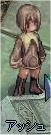
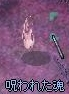
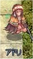
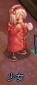
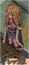
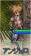
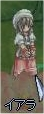
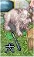
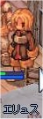

画像にリンクがはってあるものは、クリックすると別窓で大きめサイズが表示されます。
[アーク]
所在地；アインブロック中央付近 (215,180) |
   |
[アールブヘイム]
「アルフヘイム」「アールヴヘイム」。 |
[アサシンギルド関係者]
所在地；ソグラド砂漠16(moc_fild16)12時方向 |
   |
[アステ]
所在地；カピトーリナ修道院(prt_monk:230,106) |
  |
[アステル]
所在地；プロンテラ(126,335) |
  |
[アッシュ]
所在地；フィゲル8時方向建物（hugel:52,94）内 |
  |
[アッシュブルース]
所在地；死者の街ニブルヘイム2時方向 |
|  |
[アドリ]
所在地；ブラジリス(315,333) |
|  |
[アラキナ]
所在地；死者の街ニブルヘイム室内 |
|  |
[アルペスト]
所在地；フェイヨン弓手町内 |
   |
[アレックス]
所在地；フィゲル8時方向建物（hugel:52,94）内 |
 |
[アンジェロ]
所在地；ブラジリス(297,306) |
 |
[イアラ]
所在地；滝の中の洞窟02(bra_dun02:67,204) |
|  |
[イカロス]
フェイヨンアーチャーの町に本部がある「アーチャーの集まり」の組織名。 |
[忙しそうな少年]
所在地；プロンテラ(248,212) |
   |
[犬]
所在地；カピトーリナ修道院(prt_monk:235,245) |
   |
[犬]
所在地；ミョルニール山脈01(mjolnir_01:313,269)付近 |
|  |
[イムブルリア]
所在地；ミョルニール山脈01(mjolnir_01:313,268) |
   |
[ウェナタン]
所在地；ウンバラ室内 |
   |
[ウンゲル]
所在地；ゲフェン宿屋奥 |
  |
[エリュス]
所在地；プロンテラ酒場（207,155）内 |
  |
[エル・ギルナー]
所在地；アインブロックのホテル(257,199)2階 |
   |
[エルザン]
所在地；フィゲル中央広場 |
   |
[エロン]
所在地；フィゲル屋内 |
   |
back
(c) Gravity Co., Ltd. & Lee MyoungJin(studio DTDS). All rights reserved.
(c) GungHo Online Entertainment, Inc. All Rights Reserved.
当コンテンツの再利用（再転載・配布など）は、禁止しています。